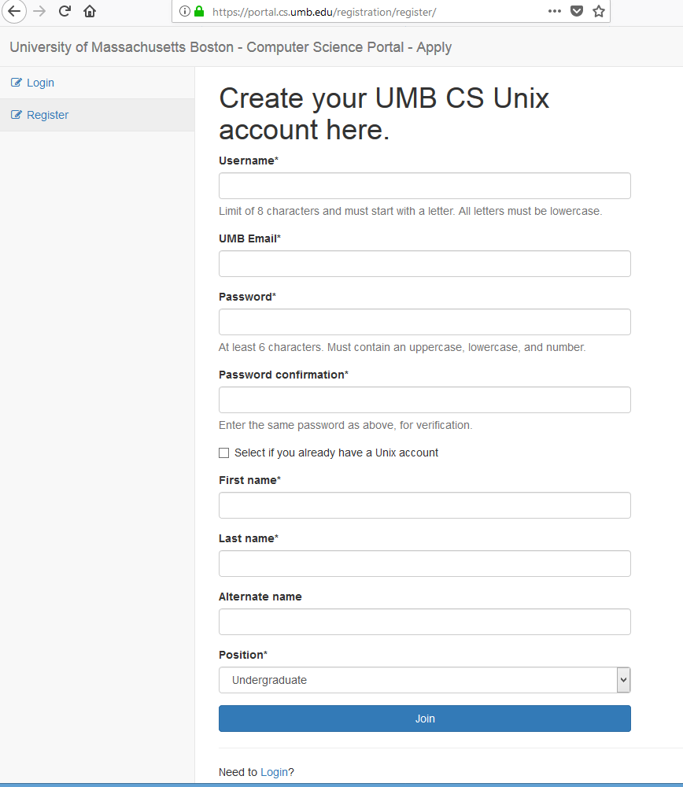

The Apply Process
Topics
Why You Need to Apply
What If You Already Have a Unix Account?
Windows Accounts
The New Apply Program
Using the New Apply Program
The Username Field
The UMB Email Field
The Password Field
After You Click the Join Button
When are the Account and the Directory Created?
Why You Need to Apply
In order to do the work for this course, you will need two things
A Unix account
A course directory
With the Unix account to can connect to any Unix/Linux machine ...
on the CS Department network
The course directory is where you will put your work for this course
When you complete the Apply process you will also get a Windows account ...
that you can use on any of the Windows machines in the CS Labs
What If You Already Have a Unix Account?
You must complete the Apply process even if you already have a Unix account
If you do not complete the process ...
you will
not
get a course directory ...
and you will not be able to submit assignments
If you already have a Unix account ...
but have not registered with the new Apply program ...
you
must
go to
https://portal.cs.umb.edu/registration/register/
to register
DO NOT CREATE A NEW UNIX ACCOUNT IF YOU ALREADY HAVE A UNIX ACCOUNT
Be sure to click the checkbox labeled "Select if you already have a Unix account"
You will then need to enter your Unix username and password ...
along with your
UMB
email address
If your your username and password match a Unix account ...
you will receive an email at your UMB email address
When you click the link in that email you will be registered ...
and will then be able to select your courses
If you already have a Unix account ...
and
have
used the new Apply program ...
go to
https://portal.cs.umb.edu/registration/login/
and login
Windows Accounts
You need a separate account to use the CS Department Windows machines
When you complete the Apply process a Windows account will be created ...
with the same username
This account will at first have the default password "abcd_1234"
The first time you connect to a Windows machine with this account ...
you will be asked to change your password
To keep things simple, its a good idea to make your Windows password ...
the same as your Unix password
The New Apply Program
For the last 30 years the program students used for the apply process ...
was something that had to be run on the Unix command line
It wasn't very user friendly ...
and student often made mistakes
A group that I have been working with has created a new Apply program ...
which is web-based ...
so you can complete the Apply process from any web browser
If you run into any difficulties using the program ...
please send me an email at
tsoro@cs.umb.edu
or please send me an email at
torna.soro001@umb.edu
Using the New Apply Program
To use the new program point your browser to
https://portal.cs.umb.edu/registration/register/
When you do, you should see a page that looks like this

The Username Field
The first box is for your username
If you already have and Unix account ...
you
must
enter the username of your current user account
If you
do not
have a Unix account ...
you need to create a username
A username must be no more than 8 characters ...
and must start with a letter
A good way to create a username ...
is to use the first initial of your first name ...
followed by your last name
The username must be
lower case
Do not use capitals
The UMB Email Field
The CS Portal is a public web site
So we need to make sure that only UMB students ...
can use it to create an account
How can we tell whether someone is a UMB student ...
someone with malevolent intent?
By asking you for your
UMB
email address
Once you fill out all the information on the Registration page ...
and click Join ...
an email will be sent to your UMB email address
The email will contain a link
When you click this link ...
it will take you back to the Apply program ...
and allow you to select a course
The changes won't happen ...
unless you click on the emailed link
The Password Field
If you already have a Unix account ...
you
must enter the password you used for your existing account
A password must
Be at least 6 characters
Have lowercase letters
Have at least 1 uppercase letter
Have at least 1 digit (0-9)
A password can be longer than 6 characters ...
but the
first 8 characters
must meet the last three criteria listed above
After You Click the Join Button
When you has finished filling out the Registration page ...
you need to click the Join button
An email will automatically be sent to your UMB email address
If you don't see the the email, check your spam folder
You must open this email message and click on the link provided
When you do, you will brought back to the Apply app ...
where you see a message
Your account is now activated
Now click on the Login link on the left hand side of the screen
After you login, you will see a list of courses
Select the courses you are taking and click Submit
When are the Account and the Directory Created?
There is a delay between the time when you chose your courses ...
and when your account and course directories are created
Certain things have to be checked ...
and then a script has to be run
Usually this script is run in the evening
Once the account and directories have been created ...
an email will be sent to your UMB account
Copyright : Glenn Hoffman, Director of the IT program, Umass-Boston